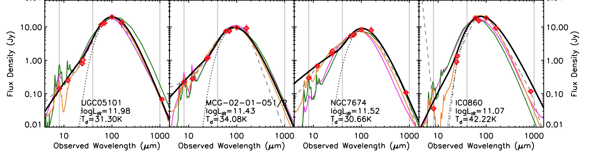

cmcirsed.pro
far-infrared spectral energy distribution fitting for galaxies near and far

The cmcirsed.pro SED fitting code (written for IDL) is described in Casey (2012). Please let me know if you have questions or encounter any issues.
download cmcirsed package here
Download & Installation Instructions
Unpack tarball in a new subdirectory of your local IDL directory (included in your IDL path). See the header of cmcirsed.pro for notes on how to use the fitting code. Not every procedure is documented perfectly, so please contact me if you have a question or problem.
Description of contents
This package contains the following IDL routines:
- cmcirsed.pro - the fitting procedure used to fit FIR photometric points to a modified blackbody and mid-IR powerlaw with known redshift
- cmcirsed_nopl.pro - same as above but without the mid-IR powerlaw component fitting
- fluxlfirtosed.pro - with known redshift, IR luminosity and a single FIR photometric point, generate the most plausible FIR SED fit
- fluxtdtosed.pro - with known redshift, dust temperature and a single FIR photometric point, generate the most plausible FIR SED fit
- seddetlim.pro - computes the luminosity detection limit as a function of dust temperature given a wavelength, flux limit and redshift
- sedtolfir.pro - integrate a given FIR SED (e.g. from the routines above) to calculate a FIR luminosity (can specify integrands)
- sedtosir.pro - same as sedtolfir but integrate to units of W/m^2 (can specify integrands)
- tdtosed.pro - with known redshift, dust temperature, and luminosity generate a FIR SED
- (dependency) lfirtoradio.pro - given a redshift and IR luminosity, calculate a radio flux density at rest-frame 1.4GHz
- (dependency) radiotolfir.pro - the reverse of the procedure above
- (dependency) makehx.pro - makes an array quickly with specified min, max, and bin
- (dependency) noramlizepoint.pro - quickly compute offset in flux density for an SED template and the given observations
- (dependency) takeaway.pro - takeaway elements of one array if they are members of another array
- (dependency) horz.pro - draw a horizontal line on an idl window
- (dependency) ver.pro - draw a vertical line on an idl window
- (dependency) oplot_lines.pro - overplot line segments on an idl window
- (dependency) lumdist.pro - computes luminosity distance for a given redshift, revised from goddard version to allow cm input
Troubleshooting tip: If there are issues with your SED fitting, I would recommend trying to figure out which photometric point is causing you problems; many users’ problems trace back to a photometric point with an unrealistic uncertainty.